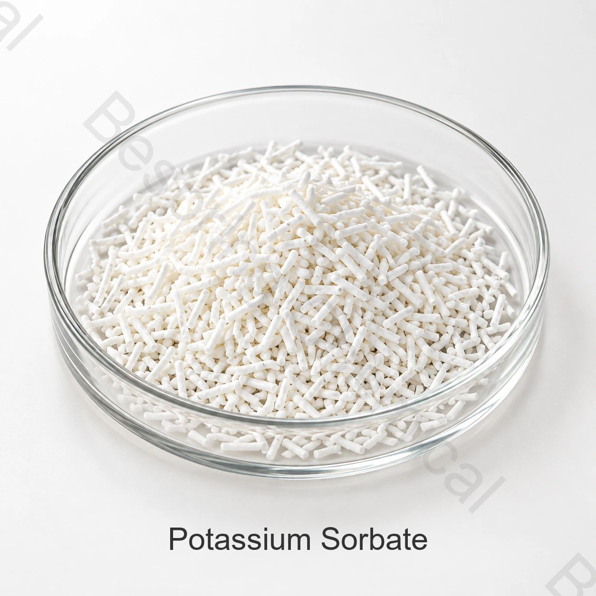

Identité et grade du produit
Indiquer la forme exacte, l'espèce cible, le type d'aliment, la quantité, l'emballage, la destination et les documents requis.
Ingrédient de qualité alimentaire · Ingrédient de conservation des aliments pour animaux · PS
Le sorbate de potassium de qualité alimentaire est un agent de conservation du sorbate utilisé dans les applications autorisées des aliments pour animaux et des matières premières; son efficacité dépend de l'humidité, du pH, de la distribution, du stockage et du système de conservation total.

Image du produit · confirmer la qualité et l'emballage lors de la commande
Partager la forme exacte, les espèces cibles, la catégorie d'aliments, la quantité, la destination et les documents.
GradeQualité des aliments pour animaux, sous réserve de la qualification de source
SpécificationDocument actuel disponible auprès des ventes
Conditions d'utilisationLes règles relatives à l'espèce et à la destination régissent
Preuves par lotsACO actuel disponible pour les lots fournis
Réponse directe du produit
Le sorbate de potassium de qualité alimentaire est un agent de conservation du sorbate utilisé dans les applications autorisées des aliments pour animaux et des matières premières; son efficacité dépend de l'humidité, du pH, de la distribution, du stockage et du système de conservation total.
La pertinence dépend du produit exact, des espèces cibles, de l'étape de la vie, de l'alimentation complète, de la fonction technologique ou nutritionnelle prévue et de l'autorisation de mise sur le marché.
Liste de contrôle pour les achats
Comparer la qualité offerte, les exigences de demande et les conditions commerciales avant de demander un échantillon ou de passer une commande.
Indiquer la forme exacte, l'espèce cible, le type d'aliment, la quantité, l'emballage, la destination et les documents requis.
Demander une soumission spécifique à la source avec les spécifications actuelles, Incoterm, destination et la fenêtre de livraison.
Partager la base de formulation, la fonction prévue, le processus, le système d'inclusion et les règles applicables en matière d'alimentation animale.
Qualifier l'identité, les méthodes, l'ACO, la SDD, la traçabilité, les certificats et les attentes en matière de contrôle du changement.
Examen de la demande
Il s'agit de zones de dépistage, et non d'autorisations universelles, d'instructions alimentaires, de recommandations posologiques ou de résultats garantis.
Valider le système de conservation complet en fonction des conditions d'entreposage prévues. L'identité ou l'essai du sorbate ne démontre pas la durée de conservation des aliments finis.
Vérifier la compatibilité et la stabilité avec les autres composants de mélange. Définir la contribution de chaque actif et la voie d'application prévue.
Évaluer la distribution sur le matériel réel et au débit prévu. Inclure la variation de l'humidité dans l'essai.
Utiliser des emballages représentatifs et des conditions d'entreposage pour la validation. Surveiller les critères de qualité et microbiologiques spécifiés pour l'aliment fini.
Sélection technique
Fournir l'humidité des aliments, l'activité de l'eau, le pH, la durée de stockage et les organismes cibles, qui définissent les défis à relever pour le système de préservation proposé.
Indiquer la forme physique et l'essai. Vérifier la dissolution ou la distribution sèche dans les conditions d'application réelles.
Consigner les conditions de préparation, de dosage et de mélange. Évaluer l'aliment traité à des points d'échantillonnage représentatifs plutôt que de s'appuyer uniquement sur l'addition nominale.
Confirmer la catégorie exacte d'aliments pour animaux, les espèces et les exigences de destination.
Documentation technique privée
Bespring Chemical ne publie pas les spécifications du produit pour cet ingrédient d'alimentation en ligne. Contactez les ventes pour la spécification spécifique à la source ou TDS actuelle et confirmez que sa révision, ses méthodes et ses critères correspondent à votre processus d'approbation.
Demander la spécification ou la SDT, la SDD, les méthodes d'analyse, l'ACO représentatif et l'ACO par lots.
Vérifier la source, la traçabilité, la sécurité des aliments pour animaux, la qualité, l'origine et les documents du site pour la qualité exacte.
Révision Aperçu des additifs pour l'alimentation animale de l'EFSA et directives d'autorisation, puis vérifier les règles actuelles dans chaque marché de destination.
Note de conformité des aliments pour animaux: Une fonction d'identité ou technique n'autorise pas l'utilisation de chaque espèce, catégorie d'aliments pour animaux, itinéraire ou marché.
Stockage et manutention
Questions des acheteurs d'aliments pour animaux
Le sorbate de potassium de qualité alimentaire est un agent de conservation du sorbate utilisé dans les applications autorisées pour les aliments du bétail et les matières premières; son efficacité dépend de l'humidité, du pH, de la distribution, de l'entreposage et du système de conservation total.
CAS 24634-61-5; Sel de potassium d'acide sorbique. Lorsqu'un nom couvre des sels, des hydrates, des porteurs ou une famille de produits, indiquer la forme exacte offerte.
Bespring Chemical ne publie pas de spécifications pour cet ingrédient d'alimentation en ligne. Contactez les ventes pour les spécifications actuelles spécifiques à la source ou TDS, les méthodes et l'ACO représentative.
Demander la spécification ou la SDT actuelle, la SDD, l'ACO représentatif et le lot, la traçabilité et les documents applicables en matière de sécurité des aliments pour animaux, de qualité, d'origine et de site pour la source exacte.
Indiquer la catégorie et le formulaire exacts, les espèces cibles, la catégorie d'aliments pour animaux, la fonction prévue, la quantité, l'emballage, le marché de destination, les documents requis, la date d'incotermination et la date de livraison.
Contenu mis à jour 2026-09-13.
Approvisionnement connexe
Parcourir les minéraux, les acides aminés, les acidifiants, les vecteurs et les nutriments fonctionnels.
Discutez d'une spécification privée, de documents, d'un échantillon et d'exigences commerciales.
Examiner l'approvisionnement et l'aide à l'exportation pour les achats internationaux d'aliments pour animaux.
Approvisionnement d'aliments pour animaux sous la direction de spécifications
Partager la forme exacte, les espèces cibles, la catégorie d'aliments pour animaux, la fonction prévue, la quantité, l'emballage, la destination et la liste de documents pour une proposition pertinente.
Dites-nous votre marché de qualité et de destination afin que nous puissions confirmer quels documents sont disponibles pour votre commande.
Une référence externe n'est pas un certificat de lot ou une spécification de produit Bespring.